Reijiroとは
「Reijiro」は英辞郎CD-ROMを使った単語帳アプリです。単語やイディオムごとに学習時刻を記録し、その復習間隔を徐々に広げていくことで効率良く記憶定着を促す学習法「Spaced Repetition」を実現しています。
Reijiroは作者の西村賢 (@knsmr)が自分の英語学習のために個人的に作成して利用しているソフトウェアですが、ほかの学習者の役に立つかもしれないと思い、オープンソースで公開しています。
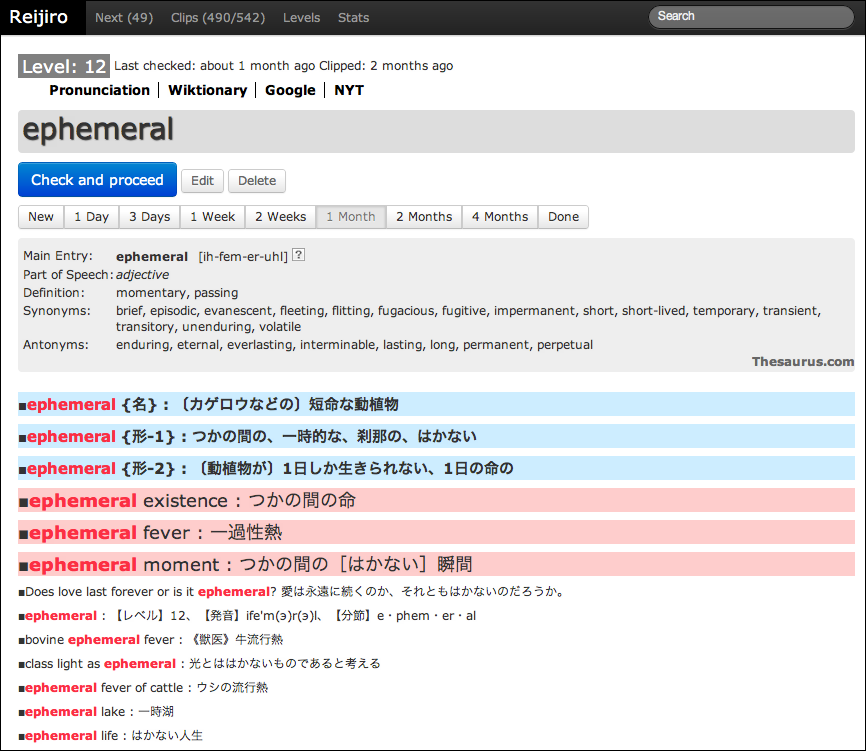
利用上の注意
※ Reijiroの利用には英辞郎CD-ROMが必要です。アルクのページやアマゾンのページから購入できます。英辞郎の辞書データの著作権はEDPに帰属します。
※ 古いバージョンの英辞郎CD-ROMはPDIC形式というフォーマットを使っていますが、ReijiroはPDICには対応していません。
※ RubyやRailsに関する知識が全くないと、インストールや利用は難しいかもしれません。
※ 単に英辞郎CD-ROMを引くのが目的であれば、EijiroXというソフトウェアがあります。英辞郎CD-ROMをSQlite3形式に変換して、Chromeエクステンションで単語のインクリメンタルサーチができるそうです。動画デモを見る限り、かなりヨサゲです。
復習タイミングは早すぎても遅すぎても非効率
Reijiroで単語をクリップすると、その単語は1日後、2日後、4日後、1週間後、2週間後……というタイミングで提示されます。Spaced Repetition(SR)については、「復習のタイミングを変えるだけで記憶の定着度は4倍になる / 読書猿Classic: between / beyond readers」というブログが参考になります。ポイントは、「あまり早いタイミングで復習しても時間の無駄。逆に復習が遅れると忘れてしまう。適切なタイミングで復習するのが効率的」ということです。
以下、ざっくりとした概念図を示します。
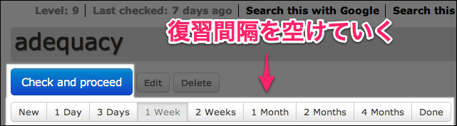
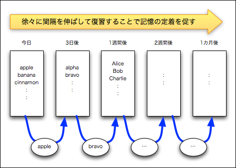
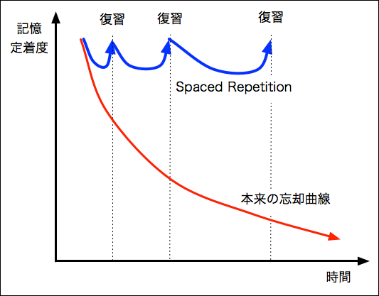
Spaced Repetitionは古くからある学習法
Spaced Repetitionの研究や利活用の歴史は古く、少なくとも50年程度の歴史はあるようです。すでに多くのメソッドがあり、ここ20年ほどはソフトウェアやサービスとしても提供されています。ソフトウェアではSuperMemoやAnkiが有名です。SRを取り入れた外国語学習サービスとしてはiKnowがあります。明示的にユーザーに進ちょく管理を委ねる方法ばかりでなく、隠れマルコフなど統計モデルを使って個々のアイテムの記憶定着度を推定するようなアプローチもあるようです。
ちなみに全く余談ですが、SuperMemo作者のポーランド人、Piotr Woźniak氏は凄まじい記憶マニア、学習マニア、自動化マニアのようで、彼がサイト上で展開する「記憶」「天才」「第二言語習得」にまつわる議論はどれも興味深いです。SR研究で論文まで書いています。Wierdのインタビュー記事、「Want to Remember Everything You'll Ever Learn? Surrender to This Algorithm」も非常に刺激的です。彼は外国語学習だけでなく、あらゆる知識をSRで吸収しているし、それどころか、自分がいつ何を読むべきかという読書や情報収集というアクティビティも完全にアルゴリズムで管理しているそうです。
英辞郎をSpaced Repetitionで「読む」
先行するソフトウェアやサービスとReijiroの違いは、ズバリ英辞郎を使っている点にあります。英辞郎は一般的な意味でいう辞書ではありません。用例と例文が豊富に収録されています（医学系や化学系が異様に充実していてバランスが悪いという難点などもありますが）。語彙の学習や増強というのが、多数の語が作るネットワーク型知識の獲得に他ならないとすれば、用例や文例を繰り返し眺めるのは効果が高そうです。英語に限らないと思いますが、良い辞書は繰り返し「読む」のが良いでしょう。ただ、辞書全体を読むのは大変なので、部分的に切り出して読むと良いというのがReijiro作者の経験則です。それが、手で書き写すことなくできる電子辞書時代は素晴らしいですね。
英辞郎を使って語彙を学習するのは、英語学習者の中でも中級、上級向けという気がします。初中級では研究社の新英和中辞典や英英辞典ならロングマンなどのほうが良いかもしれません。EPWING版の辞書をReijiroで使うよう改変するのは難しくないと思います。
動作環境
- Ruby 1.9.2+
- Ruby on Rails 3.2+
- SQlite3
- Canvasを使っているので、古いIEではたぶん統計グラフが出ません（その他も含めてIEでは動作確認をしていません）
- 基本的にローカルマシンで動かすことを想定しています。Mac OS XとLinuxで動作を確認していますが、Windowsでは辞書のインポートスクリプトが動かないと思います。
- サーバにデプロイすれば、タブレットやスマフォからも利用できます。ただし、Basic認証をかけるなどの対策をしないと著作権侵害になりますので、自己責任でご利用ください。
- インポート直後のDBのサイズは700MB程度です。1万2000語をクリップすると1GB程度になります。
- 試した限り、Androidの特定端末（Galaxy S2 LTE）の標準ブラウザでは、Ajaxイベントが発火せず使えません。iOSでは問題ありません。Androidで同様の症状が出たらOpera Mobileを使うと良いと思います。
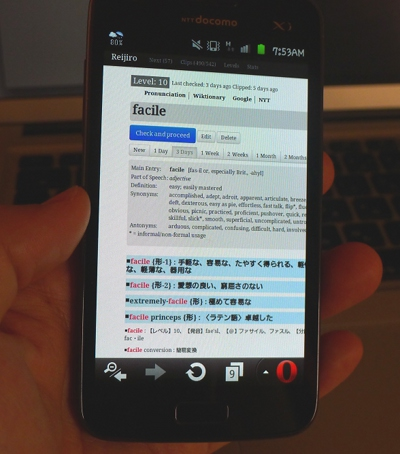
インストール
最初にCD-ROMの辞書をSQlite3形式に変換します。
まずReijiroのレポジトリをコピーします。英辞郎CD-ROMから展開したEIJI-128.TXTや、REIJI-128.TXTなどの辞書テキストファイルへのパスを、rake db:convertの引数として渡して、以下のように実行してください（zshなど、[ をファイル名展開しようとするシェルを使っているなら、たぶんクオートする必要があります）。
$ git clone https://github.com/knsmr/reijiro
$ cd reijiro
$ bundle install
$ rake 'db:convert[/path/to/Eijiro6T]'
:
: (DBのマイグレーションと辞書変換でしばらく時間がかかる)
:
:
英辞郎形式のテキストファイルからSQlite3のデータベースを生成する変換には、2.8GHzのCore 2 Duo＋SSDの環境で10分以上かかります。
英辞郎CD-ROMに含まれるテキストファイルは、CD-ROMに含まれるZIPファイルを書籍に印字されているパスワードで解凍することで得られます。EIJI-128.TXTの128という数値はバージョンを示していて、CD-ROMの購入時期によって異なります。
※ 英辞郎のテキストファイルからSQlite3へ変換するコードは、EijiroXのmakedatabase.rbの実装を参考にさせていただきました。
起動には、
$ rails s
とか
$ rails s -d
などとしてください。
ブラウザで http://localhost:3000/ にアクセスすれば、Reijiroの画面が開きます。
サーバにデプロイする場合は、config/initializers/basic_authentication.rb でBASIC認証の設定をしてください。誰でもアクセスできる状態でサーバに置いておくと、著作権（公衆送信権）の侵害になりますので十分に注意してください。
$ cd config/initializers
$ mv basic_authentication.sample basic_authentication.rb
$ vi basic_authentication.rb
使い方
語彙のクリップ方法は2つ
起動しただけでは何も単語の登録がありません。まず、新たに単語や熟語表現をクリップします。クリップ方法には3通りあります。いずれの方法でクリップしても、アメリカ式の発音へのリンク（Macmillan Dictionary）、類義語、同意語・反意語（Thesaurus.com）、Google検索のリンクなどが付加されます。
単語をクリップする1つ目の方法は、上部メニューの「Levels」から12段階のレベル別に単語をクリップする方法です。単語はアルファベット順に5個ずつまとめて行うか、一覧から選択してクリップするかできます。より出現頻度の高いLevel1から単語を眺めて行って、知らない単語をクリップするのが効果が高いのではないかと思います。
各レベルには単語が1000個含まれるので、Levelsには合計で約1万2000個含まれます。
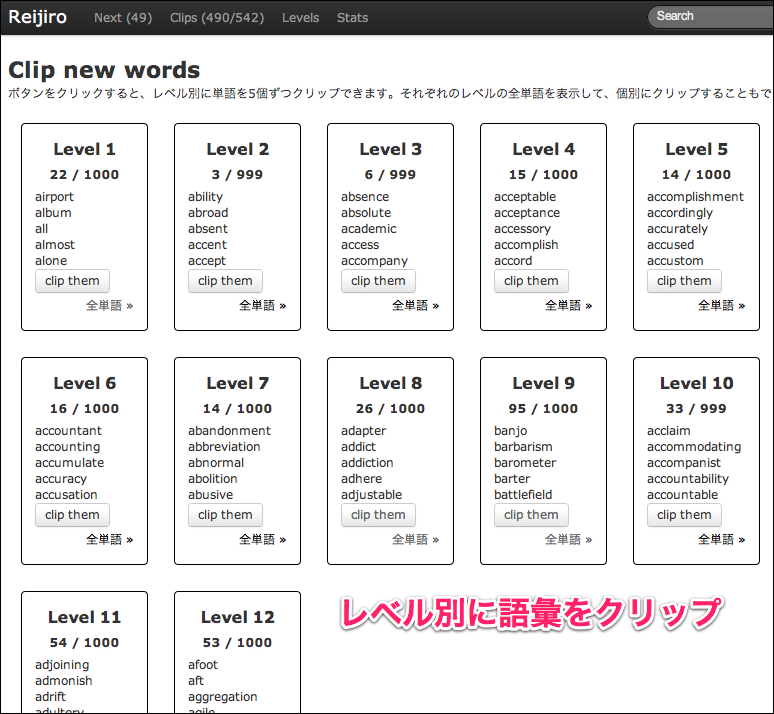
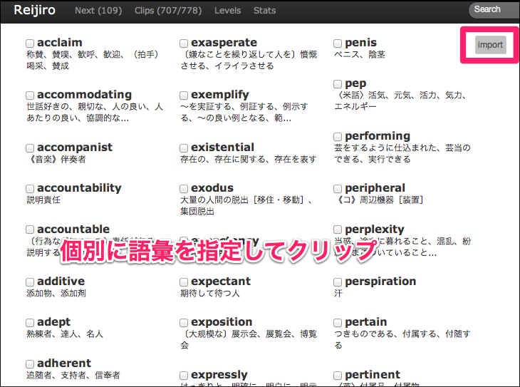
英辞郎CD-ROMを提供しているアルクは、学習者向けの基礎語彙を12段階のレベル別に1000個ずつ選定しています。この1万2000語を抑えるのが基本的な目標となるでしょう。後述する検索機能を使えば、この1万2000語に含まれない語彙もクリップできます。
ALCの1万2000語がどういうレベルかを紹介すると、例えばレベル1には、「about、above、across、act」など中学校レベルの単語が含まれます。レベル5には、「abandon、abolish、absurd、abundance」などが、レベル12には「abate、abdicate、abdominal、abhor」などが含まれます。
ちなみに、Reijiro作者は数年前にTOEICで990点を取りましたが、レベル12には結構知らない単語が含まれます。レベル8〜11の未知語を調べて覚えることがROIの高いアプローチではないかという仮説で学習しています。また、日々英文を聞いたり読んだりする中でReijiroで辞書を引くようになりましたが、出現頻度がそこそこ高そうなのにレベル12に収まらない語彙や表現もかなり多いなと感じています。Reijiroではレベル12に収まらない語彙はレベル0として表示されます。
レベル1〜6でも、知らなかった用例やイディオムも多いです。語法の分かっていなかった単語も多くあります。一例を挙げると、surrender という単語はレベル4で「降伏」という意味の名詞としては中学生でも知っていそうですが、他動詞として、
1〔命令や強制により〕～を明け渡す、～の所有権を放棄する ・He was arrested and his passport was surrendered. : 彼は逮捕されパスポートは没収された。 〔好意などにより人に～を〕譲る、あげる ・I surrendered my seat to the old woman. : 席をその老婦人に譲った。 〔希望や意向などを〕あきらめる、捨てる ・I have not yet surrendered my hope. : 私はまだ希望を捨てていない。
という語法があるのを知りませんでした。知らなければ聞き取りのときに、「あれっ？」と思うでしょうし、知らなければライティングやスピーキングで使えるわけがないのですね。この意味では知っている単語についても用例を読むのは大事だなと思っています。
「自分でスピーキングでも使えるようにしたい語彙や用例」「作文時に使えるようにしたい語彙」「聞いたり読んだりしたときに、すぐに意味が分かるようにしたい語彙」の3つは、かなり異なるように感じています。意味が分かればいいだけなら、用例や文例を繰り返して発声してみるような練習は不要かなと思うからです。この辺り、目的別のカテゴリーを作って学習フローを変えてもいいのかなということを考えたりしています（が、今のところは「小賢しいことを言わずに出会った未知語は全部覚える」という根性論アプローチを採用しています）。
検索して語彙をクリップ
日々調べる単語については、検索ウィンドウに対象語を入れるとことで、その単語や表現をインポートできます。英辞郎には「wreck havoc」などという句動詞も入っていますが、こうした表現は、ふつうにスペース区切りで検索できます。「often-repeated」など、ハイフン表記される語彙はハイフンを入れて検索してください。
英辞郎がいかに用例が豊富だといっても、掲載されていない単語や俗語も少なくありません。Reijiroの検索で引っかからなかった場合は、自分でどこかで用例や意味を調べてクリップすることができます。俗語、新語の類は、Urbandictionary.comがオススメです。クリップするものは、実は単語である必要すらありません。何かを読んでいるときに文例として覚えたいようなものは、その文を見出し語としてクリップしてしまうといいと思います。
辞書検索にReijiroを使うことで「調べっぱなしで、その後は忘れたまま」という状態にならなくなります。一旦調べた単語は、適当なタイミングでReijiroが復習を促してくれるからです。空き時間にスマフォで復習することもできます。その時に、どの語を復習すべきかは、Reijiroが知っています。
ふだんの辞書検索は、ブラウザの検索エンジンの1つとして登録してしまうといいと思います。Chromeなら「設定→検索→検索エンジンの設定」から「rei → spaceキー → 検索語」といようなことが可能です。
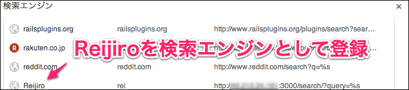
英辞郎は変わった辞書で、1つの語彙に複数のエントリが対応します。というよりも、各エントリには1つ、もしくは複数からなる単語や表現、例文が含まれていて、フラットな構造となっています。例えば、attireという単語であれば、以下のとおり数十のエントリがヒットします。
■attire {名} : （豪華｛ごうか｝な）衣装｛いしょう｝
■attire {他動} : 〜に盛装｛せいそう｝させる、めかす
■attire : 【レベル】12、【発音】эta'iэ(r)、【分節】at・tire
■appropriate attire : 適切｛てきせつ｝な［場にあった］服装｛ふくそう｝■・When choosing a costume, refer to the school's guidelines for appropriate attire. 衣装を選ぶ際には、学校の適切な［場にあった］服装のための指針［規則］を参照しなさい。
■attire for someone's wedding day : （人）の結婚式｛けっこんしき｝の衣装｛いしょう｝
■attire in suit and tie : ネクタイとスーツに身を固める
■attire oneself : 身支度する
■casual attire : カジュアルな服装｛ふくそう｝
:
:
■dreadful attire : ひどい［目を覆いたくなるような］服装｛ふくそう｝
■formal black attire : 黒の正装｛せいそう｝
■formal regal attire : 〈英〉公式｛こうしき｝の礼服｛れいふく｝
:
:
■in proper attire : きちんとした服装［身なり］で
■in wedding attire : 婚礼｛こんれい｝の衣装｛いしょう｝をつけて、花嫁｛はなよめ｝［花婿｛はなむこ｝］姿で
■informal attire : インフォーマル・ウェア、略礼装｛りゃくれいそう｝
:
:
■mourning attire : 喪服｛もふく｝
■proper attire for businessman : ビジネスマンにふさわしい服装｛ふくそう｝
■protective attire : 防護服｛ぼうご ふく｝、けがをしないような服装｛ふくそう｝
■relaxed-attire day : 《ビジネス》カジュアルな服装｛ふくそう｝の日
■skimpy attire : 肌もあらわな服装｛ふくそう｝
:
:
■"In Japan, wearing a necktie is the proper attire for formal occasions. : 「日本では正式の時の服装はネクタイ着用です。
■"The necktie is only one part of a person's attire. : 「ネクタイはその人の服装の一部にすぎない。
■Actually, my attire doesn't change in summer and winter, either. : 実は私も、夏と冬で服装が変わりません。
:
:
Reijiroでは、これらの個々のエントリを、itemsというDBのテーブルに保存しています。単語をクリップしたり検索したりするときに、これらのエントリをattireに紐づいたものとして、1つの単語として登録します。
attireに含まれる「mourning attire」（喪服）を再度検索し、独立したエントリとしてクリップすることもできます。例えば、pressing concern（差し迫った問題）などの表現は、concernという項目ではなく、独立した1つの表現として覚えるほうが良いかもしれません。
用例や例文を全て読むことに価値がある（ので読んで覚えたい）というのがReijiroを作った動機です。「attire=衣装」などと1対1に訳語を覚えることが語彙力増強になると思いません。その語は、どういう語法で使われるか、どういう形容詞や動詞、名詞と結びついて使われるのかという、いわゆるコロケーション情報が脳内に蓄積されないことには語彙力がつかないと思うからです。もう1つ例を挙げましょう。「dismiss=解散する」という語があります。これは訴えや懇願、案などを棄却するとか退けるという意味で「dismiss a plea」「dismiss a case against something」「dismiss rumors as nothing」（うわさを一蹴する）などと使います。こうした用例を眺めることが重要です。ついでに形容詞のdismissiveや名詞のdismissalも調べて用例を眺めることで初めて、dismissという語の持つイメージや、それが作る語彙のネットワークが何となく見えてくるものだと思います。
類義語や反意語については、Thesaurus.comを検索した結果を引用して自動的に貼り付けます。
英辞郎は日々成長している辞書ですが、2012年現在で項目数182万、例文数が恐らく20万程度含まれます。これは語数ではなく項目数です。1語に複数項目が対応します。このため、初級レベルの語ほど対応項目が多く、読むのが大変です。インポートも若干もたつきます。でも、初級レベルのものほど英辞郎を「読む」価値が高いのではないかと思います。例えば私の例だと、acrossという超基本語彙で、
- across town: 町の反対側、向こう側に
- across the table: テーブルを挟んで向かい合って
- across the nation: 国全体に
- 1 inch across : 直径1インチ
- come across: 〜の印象を与える
などを知りませんでした。正確にいうと、読んだり聞いたりすれ理解した気になる用法だったのだと思います。ただ、改めて引っかかりを感じて明示的に覚えたことで、使える表現になったと感じています。適用できる場面の多さを考えると、英検1級のような難しい単語を覚えるよりも、こうした基本語彙の語法を改めて整理することのほうが重要なのではないかと思ったりしています。
語彙の復習
インポートした語彙は、3つの状態に分類されています。
- 学習中の語彙のうち、チェック後間もない語彙
- 学習中の語彙のうち、復習すべき語彙
- 学習が完了した語彙
Reijiroを開くことで2の語彙(復習すべき語彙)を1つ表示できます。復習すべき語彙は1つも残っていないかもしれません。この場合、Levelsボタンを押したのと同じ、単語のクリップ画面が開きます。
単語が表示された状態で、「Check and proceed」をクリックすると、その語は学習したということでチェック済みとなり、次にチェックすべき日が来るまでは1の状態になります。このとき画面は、次に復習すべき語彙に自動的に遷移します。
「復習すべき」というのは、その語彙を最後にチェックして(表示して何らかのボタンを押す)からどのぐらい時間が経過しているかによって決まります。0秒、1日、2日、4日、1週間、2週間、1カ月、2カ月と伸びていき、合計8回チェックしたらその語彙について学習完了となります。最初から復習間隔を一気に「1カ月後」にしたり「完了」にしても構いません。逆に、3日目に全く思い出せなくて不安を感じるなら、再び1日後に提示するように1 Dayボタンを押しても構いません。
クリップした単語の一覧で復習
SR学習法に従って効率良く単語を記憶していたつもりでしたが、最近気が付いたのは、ざっと一覧を見返すのは良い復習方法ではないかということです。例えば2週間ぶりに単語を見て、さらにその1カ月後に見るだけというのは、逆に効率が悪い気がします。忘却が学習の直後の30分や1時間のうちに最も顕著に起こるのだとしたら、ざっと復習をした後に、さらに復習するのが良いはずです。
その日に学習した語彙を復習するには、メニューからClipsをクリックします。Clipped wordsとして表示される一覧は、復習した単語順に表示されるので、適当に遡っていくことで復習ができます。
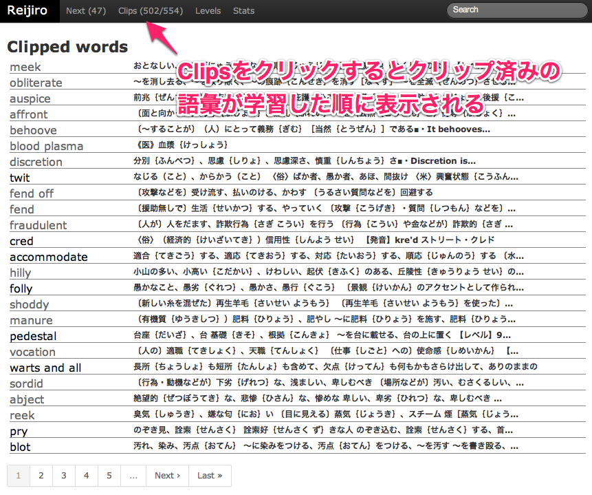
用例の編集
クリップした単語の実例、用例、文例は編集できます。
- 余計だと思ったら文例を削ることができます。
- 自分にとって重要だと思った用例については、Editボタンを押して編集画面に移り、行頭の「■」を「@■」として半角のアットマークを付加することで一種のアンダーラインを付けることができます。アンダーラインを付けると、蛍光マーカーで線を引いたように、大きく、目立つ色で先頭に表示されるようになります。
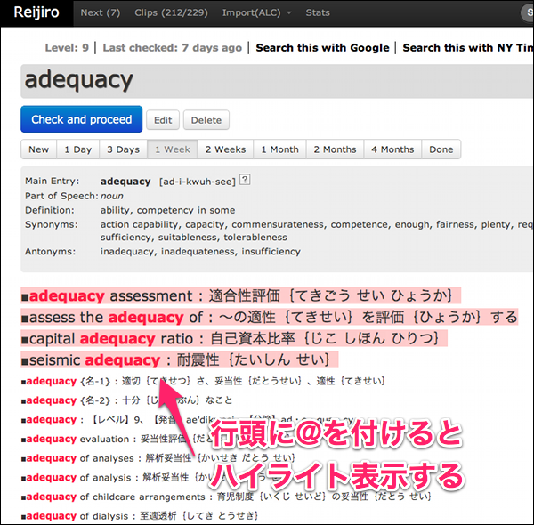
すでに知っている単語、例えば「crash」という語でも、米口語の「寝る」という用法だけを覚えたいというようなときには、この編集機能が便利です。
進捗状況の確認
クリップした単語の数は、以下のようにレベル別に棒グラフで見ることができます。水色の部分が学習終了を示しています。
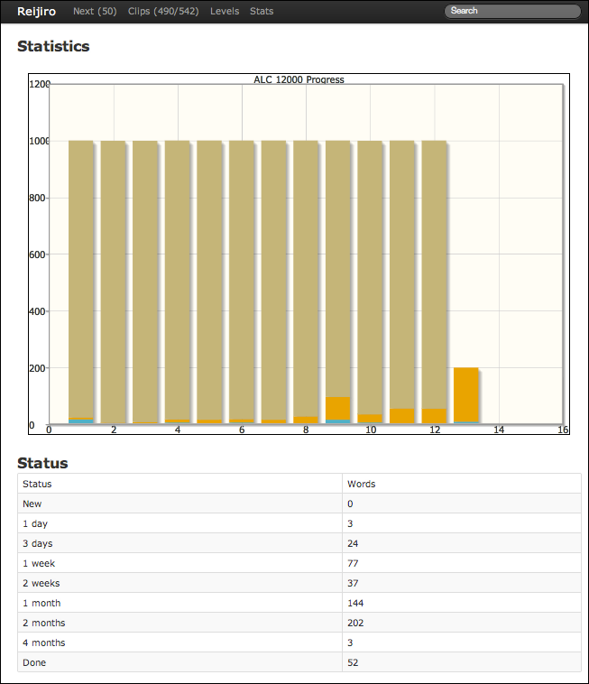
1日に何単語をチェック（学習）したかも集計して表示します。あまりどんどんクリップすると、毎日100個単位で復習することになってしまいます。せいぜい1日に30分程度の学習時間なら、1日に5〜10個程度クリップで十分でしょう。最初はクリップした単語の復習だけになりますが、朝晩やれば、いずれ毎日50〜80個程度を復習するペースに落ち着くと思います。復習なので、さほど時間はかかりません。通勤・通学の空き時間でも対応できる分量でしょう。
なみに作者自身はReijiroを使い始めて4カ月程度で650クリップとなっています。1日平均5.4クリップです。単語学習のペースとしては遅いかもしれませんが、気長にやるつもりです。現在、推定1万2000語レベルの単語力を2万語レベルに引き上げたいのですが、ざっと4年かかる計算です。ウンザリします。明らかに体感できる効果も出ているし、外国語学習が好きなのでいいのですが。
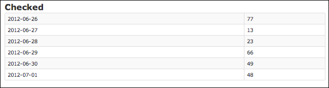
謝辞
Reijiro作成にあたっては、Asakusa.rb の皆さまに助言をいただきました。ありがとうございます。
ライセンス
- Reijiro: Copyright 2012 Ken Nishimura. MIT License
- Twitter Bootstrap: Copyright 2011 Twitter, Inc. Apache 2.0 License
- jqPlot: Copyright 2009-2011 Chris Leonello. MIT License